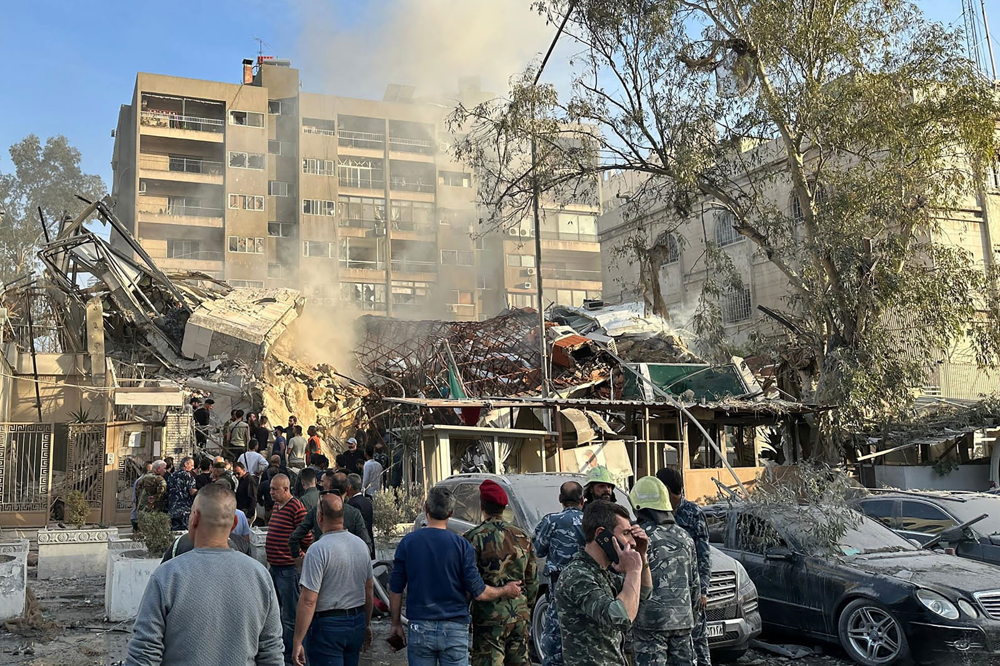
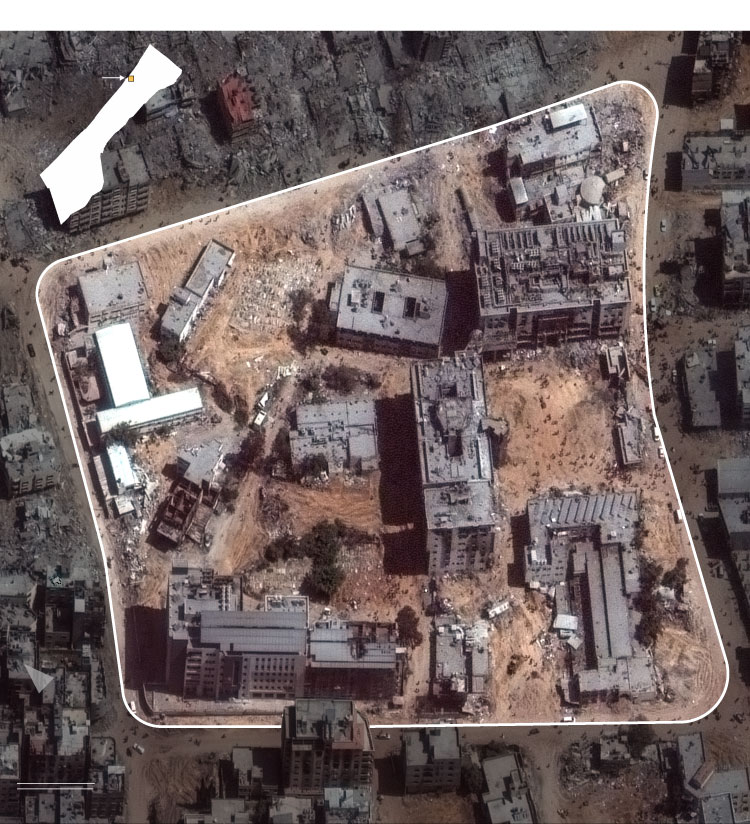

This is a copy of a story on CNN.com
Emergency and security personnel gather at the site of strikes, which hit a building next to the Iranian embassy, in Damascus, Syria, on Monday. Maher Al Mountes/AFP/Getty Images
A top commander in Iran's Revolutionary Guard has been killed in an airstrike on the country's consulate building in Damascus, Syria, according to Iranian officials and state-affiliated media, which blamed Israel for the attack.
Iranian Quds Force commander Mohammed Reza Zahedi was among those killed in the incident on Monday, according to Iran's foreign ministry.
Speaking to reporters in Damascus, Iranian ambassador Hossein Akbari alleged that the building “was targeted with six missiles from Israeli F-35 warplanes.”
Sources: Maxar Technologies, Israel Defense Forces, Gaza Civil Defense Graphic: Henrik Pettersson, Paul P. Murphy and Allegra Goodwin, CNN
Akbari added that Iranian diplomatic staff and military advisers were killed in the attack, and their names will be announced later. In a separate interview later on Monday, he said two Syrian policemen were among the people injured.
CNN cannot independently verify the claims or casualty figures.
Syrian state media Syrian Arab News Agency also reported that “an Israeli act of aggression targeted on Monday afternoon a building in Mezzeh neighborhood in Damascus,” causing “massive destruction.”
Asked for comment on the incident by CNN, the Israel Defense Forces said it does not comment on foreign reports. Footage of the aftermath of the blast, published by Iranian state media Press TV, showed damage to the building, fire and smoke at the scene.